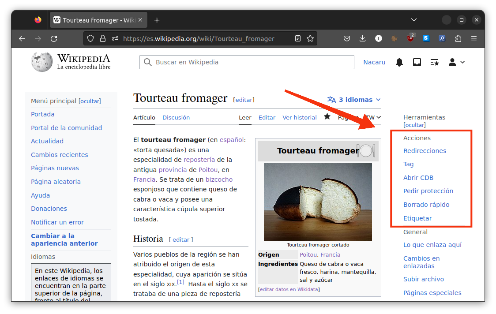
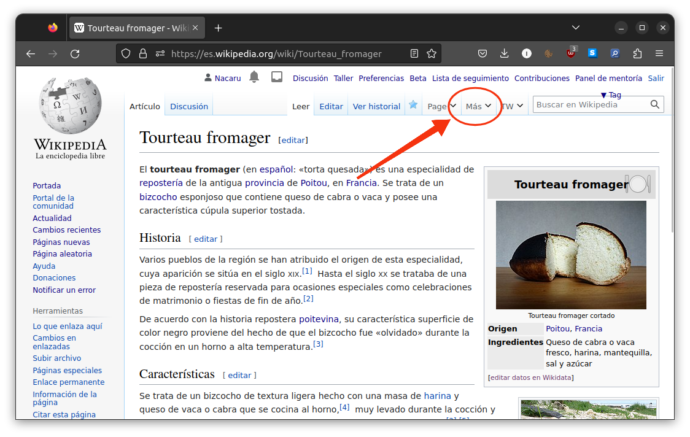

{ width=9.25em }
{ width=9.25em }##
::: notes El Twinkle primigenio en eswiki permaneció utilizable durante unos años y fue posteriormente abandonado :::
(Toda la información se halla en la página de documentación en Wikipedia)
common.js: puede hacerse a través de este enlacemw.loader.load(“https://es.wikipedia.org/w/index.php?title=Usuario:Nacaru/twinkle-lite.js&action=raw&ctype=text/javascript”);
::: notes Probablemente en el futuro podrá activarse a través de la página de configuración personal :::
¡Ya estaría listo!
Si todo se ha instalado correctamente debería de aparecer este menú en la parte superior de la interfaz:
{ width=80% }
Si usas la interfaz antigua Vector 2010 o si has ocultado el menú de la derecha, las opciones de Twinkle Lite se situarán en el menú de edición superior en su lugar.
{ width=80% }
TL posee un módulo que incluye un catálogo de plantillas que pueden colocarse en el artículo.
{ width=9.25em }
También incluye una opción para notificar al creador de la página, así como para especificar una razón.
De forma similar, pueden dejarse mensajes en la página de usuario de forma sencilla mediante el catálogo.
 { width=9.25em }
{ width=9.25em }
Módulo para colocación de plantillas de borrado rápido, útil p. ej. en casos de creación de páginas vandálicas
 { width=9.25em }
{ width=9.25em }
Permite denunciar usuarios a través de un simple formulario.
 { width=9.25em }
{ width=9.25em }
El script se encarga automáticamente de colocar la denuncia en el tablón adecuado.
Muestra el estado de protección de una página y permite solicitar su protección.
 { width=9.25em }
{ width=9.25em }
También se puede utilizar para solicitar la desprotección de una página.
Simplifica todo el proceso de apertura de una consulta de borrado a través de un formulario.
 { width=9.25em }
{ width=9.25em }
Al igual que otros módulos, incluye una opción para dejar un mensaje de aviso en su PD a la persona que creó la página.
{kind=link}
{kind=link}
{kind=link}